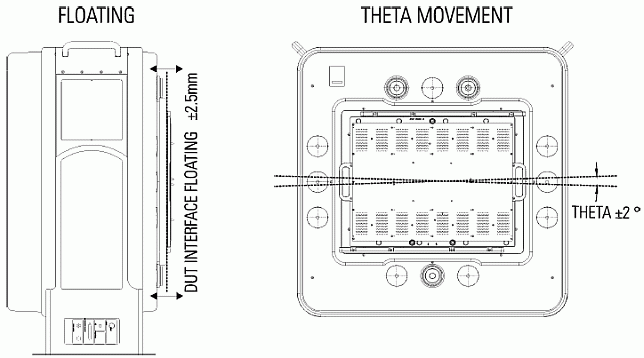

DUT interface adjustment during docking
The DUT interface has the capability to move independently from the test head. This allows the DUT interface to fine adjust to the DUT board mounted on a handler or wafer prober during docking.
When the DUT board docking is activated, the DUT interface is automatically pulled into the precise docking position. As the DUT interface can be moved with far less force than the whole test head, this mechanism significantly reduces the forces applied by the test head to the handler or wafer prober.
Moreover, the positioning of the test head for docking is simplified, as the DUT interface compensates for slight deviations of the alignment between test head and handler or wafer prober.
The flexible suspension (flexibility is achieved by elastomers) of the DUT interface allows for
- interface travel towards and away (z-direction) from the test head, called floating (±2.5 mm from the neutral position).
Bearings allow for
- rotation of the DUT interface about an axis central to the DUT board, called theta movement or theta capability (±2°).
As the flexible suspension contains four individual elastomer blocks, also tilt of the DUT interface is possible (for example, left hand side moves up, right hand side moves down). This is required to compensate for incomplete parallelism of the DUT interface and the DUT board before docking.
The figure below shows the floating and theta movement of the large DUT interface (for up to 1024 pins), and the range for each movement. The small DUT interface (for up to 512 pins) provides the same floating and theta capabilities.

The flexible suspension also increases the stability of the docking, as the elastomers are able to absorb small shocks.
Functional changes
- Introduced before SmarTest 6.3.2